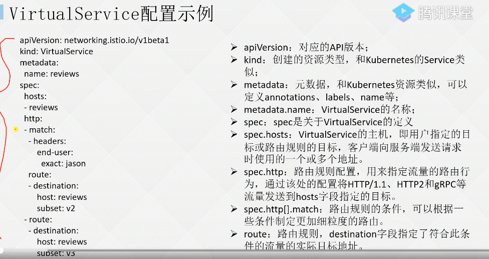
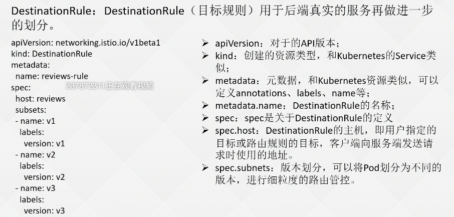
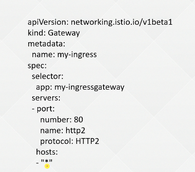

07-k8s-拓展-服务网络
- TAGS: Kubernetes
服务网格前世今生
应用架构演变历程
- 单体应用
- 退款、登录、下单
- 对某个非关键部分更新影响全局
- 退款、登录、下单
- 微服务
- 注册、登录、下单、退款
- 注册、登录、下单、退款
- 函数
- 微服务再拆分
- delete ToDo, addToDo, updateToDo, listToDo, getToDo
- 微服务再拆分
微服务带来的问
单体应用到微服务带来的问题
把单体应用拆分成很多的小模块或者小应用，带来的问题
- 网络问题
- 挂掉、响应慢
- 挂掉、响应慢
- 安全性问题
服务网络应运而生
SpringCloud / Nacos 并非是完全之策
springcloud 是 java 语言；注册表同步是有时间的间隔的，要保证下线 pod ip 及时通知下线。
网络功能代码还是需要开发人员维护（负载均衡、服务发现、熔断降级、动态路由、错误重试、安全通信等），应该只关心业务逻辑。
服务网络应运而生
把业务逻辑和网络功能的代码拆分开，业务逻辑开发人员管理，网络功能由服务网络管理。
服务网络是在微服务的基础上加了一层代理。
什么是服务网络
Service Mesh (服务网格) 是由 buoyant 公司的 ceo willian morgan 发起，目标为解决服务之间复杂的链路关系。
Service Mesh 将程序开发的网络功能和程序本身解耦，网络功能下沉到基础架构，由服务网络实现服务之间的负载均衡等功能，并且除网络功能外，也提供了其它更高级的功能，比如全链路加密、监控、链路追踪等。
服务网格功能
- 负载均衡
- 服务发布
- 熔断降级
- 动态路由
- 故障注入
- 错误重试 （存在幂等性问题，如 a请求 b，b 已经在处理了返回504超时，a再调 b 就存在幂等问题，充值场景）
- 安全通信
- 语言无关
服务网格产品
- Linkerd
Buoyant 公司在 2016年率先开源的高性能网络代理程序，它的出现标志着 Service Mesh 时代开始
- Envoy
同 Linkerd 一样，Envoy 也是一款高性能的网络代理程序，为云原生应用而设计
- Istio
Istio 受 google, ibm, Lyft 及 RedHat 公司的大力支持和推广，于2017年5月底发布，底层为 envoy
- Conduit
2017年12月发布，是 buoyant 公司的第二款 Service Mesh 产品，根据 Linkerd 在生产线上的实际使用经验而设计，并以最小复杂性作为设计基础。
- Kuma
由 kong 开发并提供支持，一个通用的现代服务网格控制平面，基于 envoy 构建。kuma 高效的数据平面和先进的控制平面，极大地降低了各团队使用的难度。
服务网格 Istio
Istio 架构
Istio mesh
- Data plane
- Pod sidecar: proxy
- Pod sidecar: proxy
- Control plane
- Istiod: Pilot, Citadel, Galley 组件
- Istiod: Pilot, Citadel, Galley 组件
- 流量
- Ingress gateway 入口流量
- Egress gateway 出口流量
- Ingress gateway 入口流量
分 2 层数据平面和控制平面。控制层面是对配置进行统一管理，配置可以分发到不同的数据
层面，每个微服务都会 sidecar proxy，proxy 是 istio 的话就是 envoy。 istios 即能管理东西流量即服务之间的流量，也能管理南北流量即出入口流量
Istio 数据平面-Envoy
Pod
- 应用容器
- Envoy 容器
istio 的数据平面使用的是 envoy，Envoy 是以 c++ 开发的高性能代理，用于调解服务网络中所有服务的所有入站和出站流量。envoy 代理是唯一一个与数据平面流量交互的 istio 组件。
功能：
- 动态服务发布
- 负载均衡
- HTTP/2 & gRPC 代理
- 熔断器
- 健康检查、基于百分比流量分析的灰度发布
- 故障注入
- 丰富的度量指标
Istio 控制平面-Istiod
Istiod 为 Istio 的控制平面，提供服务发布、配置、证书管理、加密通信和认证。早期的 Istio 控制平台没有 istiod 这个容器，而是由 Mixer(新版本已废弃)、Pilot、Citadel 共同组成，后来为了简化 istio 的架构，将其合并为 istiod，所以对于新版本的 Istio(v1.5+)，部署后仅能看到 istiod 一个 pod。
- Pilot: 为 Envoy Sidecar 提供服务发现的功能，为智能路由（例如 A/B 测试、金丝兴雀部署等）和弹性（超时、重试、熔断器等）提供流量管理功能。
- Citadel：通过内置身份和凭证管理可以提供强大的服务与服务之间的最终身份验证，可以用于升级服务网络中未加密的流量。但我们一般会集成第三方组件来做用户验证如 OPA
- Galley：负责配置管理的组件，用于验证配置信息的格式和正确性。Galley 使用网格配置协议（ Mesh Configuration Protocol）和其它组件进行配置交互。
Istio 核心资源
kubernetes 最终生成的是容器，管理的是 Pod。
和 kubernetest 一样 istio 中核心资源 VirtualService（VS）、DestinationRule（DR）、Gateway（GW） 最终生成的就是 envoy 配置。
Istio 东西流量管理-VirtualService
简单理解就是和 service 在一个层面。
k8s 中的 service 也是实现东西流量管理，只有简单的轮询功能
k8s Service
- Pod
- Pod
VirtualService：VirtualService（虚拟服务）基于 Istio 和对应平台提供的基本连通性和服务发现能力，将请求路由到对应的目标。每一个 VirtualService 包含一组路由规则，Istio 将每个请求根据路由匹配到指定的目标地址。
exmapel-users
- Pod: deployment V1 版本，可配置百分比流量
- Pod: deployment V2 版本，可配置百分比流量
VirtualService 配置示例

apiVersion: networking.istio.io/v1beta1
kind: VirtualService
metadata:
name: reviews-route
spec:
hosts:
- reviews.prod.svc.cluster.local
http:
- name: "reviews-v2-routes"
match:
- uri:
prefix: "/wpcatalog"
- uri:
prefix: "/consumercatalog"
rewrite:
uri: "/newcatalog"
route:
- destination:
host: reviews.prod.svc.cluster.local
subset: v2
- name: "reviews-v1-route"
route:
- destination:
host: reviews.prod.svc.cluster.local
subset: v1
- apiVersion：对应 API 版本
- kind：资源类型
- metadata：元数据。可 kubernetes 资源类似，可以定义 annotations、labels、name、namespace 等；
- metadata.name： VirtualService 的名称
- spec：关于 VirtualService 的定义
- spec.hosts：VirtualService 的主机，即用户指定的目标或路由规则的目标，客户端向服务端发送请求时使用的一个或多个地址。
- spec.http：路由规则配置，用来指定流量的路由行为，通过该处的配置将 HTTP/1.1、HTTP2 和 gRPC 等流量发送到 hosts 字段指定的目标
- spec.http[].match：路由规则的条件，可以根据一些条件制定更加细粒度的路由。
- route：路由规则，destination 字段指定了符合此条件的流量实际目标地址。
更多参考官网：https://istio.io/latest/docs/reference/config/networking/virtual-service/
Istio 细粒度流量管理-DestinationRule
简单理解就是和 pod 在一个层面。
类似于给 pod 定义不同标签。
DestinationRule：DestinationRule（目标规则）用于后端真实的服务再做进一步划分。
exmaple-Service: app=paycenter
- Deployment V1: pod: app=paycenter, version=v1
- Deployment V2: pod: app=paycenter, version=v2
DR
- 具有 app=paycenter 和 version=v1 标签的 pod，归为 v1 版本。
- 具有 app=paycenter 和 version=v2 标签的 pod，归为 v2 版本。
DestinationRule 配置分析

apiVersion: networking.istio.io/v1beta1
kind: DestinationRule
metadata:
name: reviews-destination
spec:
host: reviews.prod.svc.cluster.local
subsets:
- name: v1
labels:
version: v1
- name: v2
labels:
version: v2
- apiVersion：对应 API 版本
- kind：资源类型
- metadata：元数据。可 kubernetes 资源类似，可以定义 annotations、labels、name、namespace 等；
- metadata.name： DestinationRule 的名称
- spec：关于 DestinationRule 的定义
- spec.host：DestinationRule 的主机，即用户指定的目标或路由规则的目标，客户端向服务端发送请求时使用的地址。
- spec.subnets：版本划分，可以将 pod 划分为不同的版本，进行细粒度的路由管控。
官方参考：https://istio.io/latest/docs/reference/config/networking/destination-rule/
Istio 南北流量管理-Gateway
Gateway：Istio 网关功能，可以使用 Gateway 在网格最外层接收 HTTP/TCP 流量，并将流量转发到网格内的某个服务。同时支持出口流量的管控，可以将出口的流量固定从 EgressGateway 的服务中代理出去。
k8s
- Istio System
- IngressGateway 管理入口流量
- EgressGateway 管理出口流量
- IngressGateway 管理入口流量
- Application
- APP
- APP
- APP
| | | | +------+------------------------------+--------+ |+-----+---------+ +-----+-------+| ||IngressGateway | |Egres|Gateway|| |+-----+---------+--------------+-----+-------+| | | | | | +------------------------------+ | +------+------------------------------+--------+ |+--------------------------+ | +------++--------------------------+--+--------+ | +---------+ +--------+---+ | | | APP | | APP | | | +---------+ +------------+ | | Application | +----------------------------------------------+
Gateway 配置分析

一般会配置主机名或者是证书的配置或者是端口的配置，项目比较多可以拆分成多个 gateway。
apiVersion: networking.istio.io/v1beta1
kind: Gateway
metadata:
name: ext-host-gwy
spec:
selector:
app: my-gateway-controller
servers:
- port:
number: 443
name: https
protocol: HTTPS
hosts:
- ext-host.example.com
tls:
mode: SIMPLE
credentialName: ext-host-cert
VS 和 gateway 进行绑定
apiVersion: networking.istio.io/v1alpha3 kind: VirtualService metadata: name: virtual-svc spec: hosts: - ext-host.example.com gateways: - ext-host-gwy # <gateway namespace>/<gateway name> 如果省略此字段，将使用默认网关（mesh）
官方参考：https://istio.io/latest/docs/concepts/traffic-management/#gateway-example
https://istio.io/latest/docs/reference/config/networking/gateway/
服务网格 Istio 安装及项目发布
Istio 安装
安装注意事项
使用 Operator 部署 istio
下载地址：https://github.com/istio/istio/releases/
安装 istioctl 客户端
curl -L -o istio-1.14.3-linux-amd64.tar.gz https://github.com/istio/istio/releases/download/1.14.3/istio-1.14.3-linux-amd64.tar.gz #curl -L https://istio.io/downloadIstio | ISTIO_VERSION=1.14.5 TARGET_ARCH=x86_64 sh - # 解压后，将 istio 的客户端工具 istioctl 移动到 /usr/local/bin 目录下 tar xf istio-1.14.3-linux-amd64.tar.gz mv istio-1.14.3/bin/istioctl /usr/local/bin/ istioctl version # 命令补全 cp tools/istioctl.bash ~/ source ~/.bash_profile
接下来安装 istio 的 operator，可以使用 istioctl 一键部署
istioctl operator init
出现 Installation complete 后，查看 pod 是否正常：
kubectl get po -n istio-operator
之后通过定义 IstioOperator 资源，在 kubernetes 中安装 Istio:
kubectl apply -f - <<EOF apiVersion: install.istio.io/v1alpha1 kind: IstioOperator metadata: namespace: istio-system name: example-istiocontrolplane spec: profile: default components: # 自定义组件配置 ingressGateways: # 自定义 ingressGateway 配置 - name: istio-ingressgateway enabled: true # 开启 ingressgateway k8s: # 自定义 ingressgateway 的 kubernetes 配置 service: # 将 Service 类型改为 nodePort，默认是 loadbalancer 类型 type: NodePort ports: - port: 15020 nodePort: 30520 name: status-port - port: 80 # 流量入口 80 端口映射到 nodePort 的 30080，之后通过节点 IP+30080 即可访问 Istio 服务 nodePort: 30080 name: http2 targetPort: 8080 - port: 443 nodePort: 30443 name: https targetPort: 8443 EOF #istioctl manifest apply -f istio-operator.yaml
- profile：根据IstioOperator API的默认设置启用组件。建议将此配置文件用于生产部署和多集群网格中的主集群。通过运行istioctl profile dump命令，可以显示默认设置。https://istio.io/latest/docs/setup/additional-setup/config-profiles/
官方文档 IstioOperator：https://istio.io/latest/docs/reference/config/istio.operator.v1alpha1/
查看：
kubectl get svc,po -n istio-sytem
等待全部安装完成， istio core 、isitod、ingress gateways
配置自动注入
修改 APIserver 的配置文件，添加 MutatingAdmissionWebhook, ValidatingAdmissionWebhook（如果 kubernetes 大于 1.16 默认已经开启）：
vim /etc/kubernetes/manifests/kube-apiserver.yaml # 二进制安装方式需要找到 APIserver 的 Service 文件 - --enable-admission-plugins=MutatingAdmissionWebhook, ValidatingAdmissionWebhook # 追加这两项
接下来创建一个测试的 namespace，并添加一个 istio-injection=enabled 的标签，之后在该 namespace 下创建的 pod 就会自动注入 istio 的 proxy
创建 namespace 并添加 label:
kubectl create ns istio-test kubectl lable namespace istio-test istio-injection=enabled
切换目录至 istio 的安装包，然后创建测试应用，此时创建的 pod 会被自动注入一个 istio-proxy 容器。
可视化工具 kiali
Kiali 为 istio 提供了可视化的界面，可以 kaili 上进行观测流量的走向、调用链，同时还可以使用 kiali 进行配置管理，给用户带来了很好的体验。
接下来在 kubernetes 中安装 kiali 工具，首先进入到 istio 的安装包目录：
kubectl create -f samples/addons/kiali.yaml
查看部署状态：
kubectl get po,svc -n istio-system -l app=kiali
配置 ingress 或者 service 改为 nodePort 就可以访问 kiali 服务。
在 graph 页面可以看到应用的流量信息。
除了 kiali 之外，还需要一个链路追踪工具，安装该工具可以在 kiali 的 workload 页面，查看某个服务的 Traces 信息。直接安装即可：
kubectl create -f samples/addons/jaeger.yaml
prometheus 和 grafana
Istio 默认暴露了很多监控指标，比如请求数量统计、请求持续时间以及 Service 和工作负载的指标，这些指标可以使用 prometheus 进行收集，grafana 进行展示。
Istio 内置了 prometheus 和 grafana 的安装文件，直接安装即可（也可以使用外置的）：
kubectl create -f samples/addons/prometheus.yaml -f samples/addons/grafana.yaml
Istio 流量治理
部署测试用例
BookInfo 介绍
https://istio.io/latest/docs/examples/bookinfo/
- productpage: productpage 微服务会调用 details 和 reviews 两个微服务，用来生成页面。
- details：包含了图书的信息
- reviews：包含了图书相关的评论，它还会调用 ratings 微服务；
- ratings:：包含了由图书评价组成的评级信息。
除了上述外，reviews 微服务还分为了 3 个版本：
- v1版本：不会调用 ratings 服务，即不会在页面显示书的评分；
- v2版本：会调用 ratings 服务，并使用 1 到 5 个黑色星形图标来显示评分信息；
- v3版本：会调用 ratings 服务，并使用 1 到 5 个红色星形图标来显示评分信息；
部署 bookinfo
# 创建名称空间 kubectl create ns bookinfo # 自动注入 proxy kubectl label namespace bookinfo istio-injection=enabled # 部署 bookinfo kubectl apply -f samples/bookinfo/platform/kube/bookinfo.yaml -n bookinfo kubectl get po,svc -n istio-system
要确认 Bookinfo 应用程序正在运行，请通过来自某个 pod 的 curl 命令向它发送请求，例如来自 ratings
kubectl exec "$(kubectl get pod -l app=ratings -o jsonpath='{.items[0].metadata.name}')" -c ratings -- curl -sS productpage:9080/productpage | grep -o "<title>.*</title>" <title>Simple Bookstore App</title>
接下来创建 Istio 的 Gateway 和 VirtualService 实现域名访问 bookinfo 项目。
首先创建 Gateway，假设域名是 bookinfo.kubeasy.com。gateway 配置如下 ：
cat samples/bookinfo/networking/bookinfo-gateway.yaml
apiVersion: networking.istio.io/v1alpha3
kind: Gateway
metadata:
name: bookinfo-gateway
spec:
selector:
istio: ingressgateway # use istio default controller
servers:
- port:
number: 80
name: http
protocol: HTTP
hosts:
- "*.kubeasy.com" # 发布域名，只写 * 代表接收全部流量，生产环境建设一个项目一个 gateway
---
apiVersion: networking.istio.io/v1alpha3
kind: VirtualService
metadata:
name: bookinfo
spec:
hosts:
- "bookinfo.kubeasy.com" # 不推荐写 *
gateways:
- bookinfo-gateway
http:
- match:
- uri:
exact: /productpage
- uri:
prefix: /static
- uri:
exact: /login
- uri:
exact: /logout
- uri:
prefix: /api/v1/products
route:
- destination:
host: productpage
port:
number: 9080
使用 kiali 进行流量监测
Graph 可以看到微服务之间的调用关系。点某个服务可以看到流量信息等。
IngressGateway 发布服务原理
使用域名发布服务：
- Ingress Controller(ingress-nginx) –> Service –> Pod
- Ingress Gateway(istio) –> VirtualService( Gateway binding –> Service ) –> Pod
Istio 实现灰度部署
梯度的方式给不同版本分配流量百分比
用测试用例模拟生产情况，把 v2, v3 先关闭
kubectl scale deploy --replicas=0 reviews-v2 reviews-v3 -n bookinfo
主流发布方案
- 主流发布方案
- 蓝绿发布
- 滚动发布
- 灰度发布
- A/B Test
- 蓝绿发布
滚动发布：
每次只升级一个或多个服务，升级完成后加入生产环境，不断执行这个过程，直到集群中的全部旧版升级新版本。Kubernetes的默认发布策略，替换生产的镜像。
- 特点:
- 用户无感知，平滑过渡
- 用户无感知，平滑过渡
- 缺点：
- 部署周期长
- 发布策略复杂
- 不易回滚
- 有影响范围较大
- 部署周期长
灰度发布：
只升级部分服务，即让一部分用户继续用老版本，一部分用户开始用新版本，如果用户对新版本没有什么 意见，那么逐步扩大范围，把所有用户都迁移到新版 本上面来。如，生产是 v1 版本， 切部分流量到 v2 新版本，只影响部分用户，没问题后切 100% 流量，v1 下线。
- 特点：
- 保证系统整体稳定性
- 用户无感知，平滑过渡
- 保证系统整体稳定性
- 缺点：
- 自动化要求高
- 自动化要求高
金丝雀发布：
蓝绿发布：
项目逻辑上分为AB组，上线新版本，100% 流量切到新版本，有问题再切回去。
- 特点:
- 策略简单
- 升级/回滚速度快
- 用户无感知，平滑过渡
- 策略简单
- 缺点：
- 需要两倍以上服务器资源
- 短时间内浪费一定资源成本
- 有问题影响范围大
- 需要两倍以上服务器资源
A/B Test：
灰度发布的一种方式，主要对特定用户采样后，对收 集到的反馈数据做相关对比，然后根据比对结果作出决策。用来测试应用功能表现的方法, 侧重应用的可用性，受欢迎程度等，最后决定是否升级。
istio 内如何实现灰度发布
定义微服务的标签，属于哪个项目、前后端、名称、版本
- Service：app=xxx
- Deployment：版本标签
- Pod：app=xxx, version=v1
- Pod：app=xxx, version=v2
- Pod：app=xxx, version=v1
使用 VS 做拦截来控制流量。
VirtualService
- subnet: v1
- subnet: v2
步骤：
- 使用 DR 划分 subnet
- 具有 version=v1 标签的划分 subnet=v1；具有 version=v2 标签的划分 subnet=v2
- 具有 version=v1 标签的划分 subnet=v1；具有 version=v2 标签的划分 subnet=v2
- 使用 VS 将流量导向旧版本
- 部署新版本
- 使用 VS 切换流量
步骤1-创建 DR 划分 subnet：
vim reviews-dr.yaml
---
apiVersion: networking.istio.io/v1alpha3
kind: DestinationRule
metadata:
name: reviews
spec:
host: reviews
subsets:
- name: v1
labels:
version: v1 # subnet v1 指向具有 version=v1 的 pod
- name: v2
labels:
version: v2 # subnet v2 指向具有 version=v2 的 pod
- name: v3
labels:
version: v3 # subnet v3 指向具有 version=v3 的 pod
kubectl create -f reviews-dr.yaml -n bookinfo
kubectl get dr -n bookinfo
步骤2-创建 VS 将流量导向旧版本:
vim reviews-v1-all.yaml
---
apiVersion: networking.istio.io/v1alpha3
kind: VirtualService
metadata:
name: reviews
spec:
hosts:
- reviews
http:
- route:
- destination:
host: reviews
subset: v1 # 将流量指向 v1
kubectl create -f reviews-v1-all.yaml -n bookinfo
再次刷新浏览器，不再评分
步骤3-部署新版本：
启动新版本 v2
kubectl scale deploy --replicas=1 reviews-v2 -n bookinfo
步骤4-使用 VS 切换流量：
接下来修改 virtualService，将 20% 流量导向 v2 版本：
vim reviews-20v2-80v1.yaml
---
apiVersion: networking.istio.io/v1alpha3
kind: VirtualService
metadata:
name: reviews
spec:
hosts:
- reviews
http:
- route:
- destination:
host: reviews
subset: v1 # 将 80% 流量指向 v1
weight: 80 # 只需要配置一个 weight 参数即可
- destination:
host: reviews
subset: v2 # 将 20% 流量指向 v2
weight: 20
kubectl replace -f reviews-20v2-80v1.yaml -n bookinfo
没问题后，把所有流量接入到 v2，删除 dr 中的 v1，v1 pod 可以删除。
使用 kiali 图形化管理微服务流量
不推荐使用。
使用之前需要把手动创建的 vs\dr 删除，不然无法在图形界面修改。
Service 中选择 reviews，在 Actions 中选择 Traffic Shifting 可直接修改流量，默认是平均分配的流量。修改完成后会自动创建 VS 和 DR。
Istio 实现 AB 测试
匹配不同类型的用户，如内部和外部用户
确认 DR 中有 v3版本。
启动 v3：
kubectl scale deploy --replicas=1 reviews-v3 -n bookinfo
再次修改 reviews 的 virtualService，将内部用户 jason 指向 v3，外部用户依旧使用 v2 版本。
vim reviews-jasonv3.yaml
---
apiVersion: networking.istio.io/v1alpha3
kind: VirtualService
metadata:
name: reviews
spec:
hosts:
- reviews
http:
- match:
- headers: # 匹配请求头
end-user: # 匹配请求头的 key 为 end-user
exact: jason # value 为 jason
route:
- destination:
host: reviews
subset: v3 # 匹配到 end-user=jason 路由至 v3 版本
- route:
- destination:
host: reviews
subset: v2
kubectl replace -f reviews-jasonv3.yaml -n bookinfo
浏览器中 Sign in 登录 jason 用户验证。
官方 match 匹配文档：https://istio.io/latest/docs/reference/config/networking/virtual-service/#HTTPMatchRequest
Istio 地址重写和重写向
新旧地址替换
比如将 bookinfo.kubeasy.com/gx，301重定向跳转到 baidu.com/gx
kubectl edit vs bookinfo -n bookinfo
- match:
- uri:
prefix: /gx # 匹配 /gx
redirect:
uri: /gx
authority: baidu.com # 跳转域名
参考：https://istio.io/latest/docs/reference/config/networking/virtual-service/#HTTPRedirect
前后端分离-rewrite 实践
istio 地址重写配置方式和 重定向类似，假如将 / 重写为 /productpage，配置如下 ：
kubectl edit vs bookinfo -n bookinfo
- match:
- uri:
exact: / # 匹配根路径
rewrite:
uri: /productpage # 重写为 /productpage
route:
- destination:
host: productpage
port:
number: 9080
Istio 负载均衡算法
Istio 原生支持多种负载均衡算法，比如 ROUND_BOBIN、LEAST_CONN、RANDOM 等。
假如一个应用存在多个副本（Pod），可以使用上述算法对多个 pod 进行定制化的负载均衡配置。
每种负载均衡的策略如下 ：
- ROUND_BOBIN：默认，轮询算法，将请求依次分配给每一个实例。
- LEAST_CONN：最小连接数，随机选择两个健康实例，将请求分配成两个中连接数最少的那个；
- RANDOM：随机算法，将请求随机分配给其中一个实例；
- PASSTHROUGH：将连接转发到调用者请求的原始 IP 地址，而不进行任何形式的负载平衡，目前不推荐使用。
首先访问多次 bookinfo 的首页，之后观看 kiali 中 reviews 的流量分配。
更改算法
kubectl edit dr reviews -nbookinfo ... spec: host: reviews trafficPolicy: # 添加路由策略，在 spec 下对所有的 subnet 生效，也可以在 subnet 中配置 loadBalancer: # 配置负载均衡 simple: RANDOM # 策略为 RANDOM
Istio 熔断-并发数连接限制
假设对 ratings 进行熔断，希望在并发请求数超过 3，并且存在 1 个以上的待处理请求，就触发熔断，此时可以配置 ratings 的 DestinationRule 如下：
vim ratings-dr.yaml apiVersion: networking.istio.io/v1alpha3 kind: DestinationRule metadata: name: ratings namespace: bookinfo spec: host: ratings trafficPolicy: # 可以配置在 subsets 级别 connectionPool: # 连接池配置，可以单独使用限制程序的并发数 tcp: maxConnections: 3 # 最大并发数为 3 connectTimeout: 30ms http: http1MaxPendingRequests: 1 # 最大的待处理请求 maxRequestsPerConnection: 1 # 每个请求最大的链接数 outlierDetection: # 熔断探测配置 consecutive5xxErrors: 1 # 如果连续出现的错误超过 1 次，就会熔断 interval: 10s # 第 10 秒探测一次后端实例 baseEjectionTime: 3m # 熔断时间 maxEjectionPercent: 100 # 被熔断实例最大百分比，默认 10% subsets: - name: v1 labels: version: v1 # subnet v1 指向具有 version=v1 的 pod
保存退出后，部署压测工具 fortio，用于对容器业务进行压力测试：
kubectl -n bookinfo apply -f samples/httpbin/sample-client/fortio-deploy.yaml
等待 fortio 容器启动后，获取 fortrio 容器 id:
FORTIO_POD=$(kubectl get pod -n bookinfo | grep fortio | awk '{print $1}') echo $FORTIO_POD
发送一个请求，可以看到当前状态码为 200，即连接成功：
kubectl exec -it $FORTIO_POD -n bookinfo -- fortio load -curl http://ratings:9080/ratings/0
接下来更改为两个并发连接`-c 2`，发送 20 请求 `-n 20`:
kubectl exec -it $FORTIO_POD -n bookinfo -- fortio load -c 2 -gps 0 -n 20-curl http://ratings:9080/ratings/0 | grep Code
可以看到 503 的结果为 5，说明触发了熔断。提高并发量，可以看到故障率更高。
最后查看 fortio 请求记录（upstream_rq_pending_overflow 表示熔断次数）：
kubectl -n bookinfo exec -it $FORTIO_POD -c istio-proxy -- sh -c 'curl localhost:15000/stats' | grep ratings |grep pending_overflow
Istio 故障处理
Istio 注入延迟故障
首先不添加任何延迟，看一下访问速度如何：
# 创建一个用于测试的工具 kubectl run -it -n bookinfo debug-tools --image=registry.cn-beijing.aliyuncs.com/dotbalo/debug-tools ) time curl -I -s details:9080
注入故障
vim details-delay.yaml --- apiVersion: networking.istio.io/v1alpha3 kind: VirtualService metadata: name: details namespace: bookinfo spec: hosts: - details http: - fault: # 添加一个错误 delay: # 添加类型为 delay 的故障 fixedDelay: 5s # 注入的延迟时间 percentage: # 故障注入的百分比 value: 100 # 对所有请求注入故障 route: - destination: host: details subset: v1 kubectl create -f details-delay.yaml -n bookinfo
再次进行测试，返回时间已经达到了 5 秒：
) time curl -I -s details:9080
Istio 注入中断故障
中断故障注入只需要将 fault 的 delay 更改为 abort 即可：
vim details-abort.yaml --- apiVersion: networking.istio.io/v1alpha3 kind: VirtualService metadata: name: details namespace: bookinfo spec: hosts: - details http: - fault: # 添加一个错误 abort: # 添加类型为 abort 的故障 httpStatus: 400 # 故障状态码 percentage: # 故障注入的百分比 value: 100 # 对所有请求注入故障 route: - destination: host: details subset: v1 kubectl replace -f details-delay.yaml -n bookinfo
再次进行测试，返回 400 错误：
) time curl -I -s details:9080
Istio 快速超时配置
不想因为一个评分系统导致整个访问慢
首先向 ratings 服务注入一个 5 秒的延迟模拟 ratings 服务响应比较慢：
vim ratings-delay.yaml --- apiVersion: networking.istio.io/v1alpha3 kind: VirtualService metadata: name: ratings-delay namespace: bookinfo spec: hosts: - ratings http: - fault: # 添加一个错误 delay: # 添加类型为 delay 的故障 fixedDelay: 5s # 注入的延迟时间 percentage: # 故障注入的百分比 value: 100 # 对所有请求注入故障 route: - destination: host: ratings kubectl create -f ratings-delay.yaml
访问测试：
) time curl -I -s ratings:9080
此时在浏览器访问，可以看到整个页面都变得缓慢。接下来向 reviews 服务配置一个 1 秒超时，因为是 reviews 服务调用的 ratings 服务：
# 编辑当前 reviews 的 VS kubectl edit vs reviews -n bookinfo apiVersion: networking.istio.io/v1alpha3 kind: VirtualService metadata: name: reviews spec: hosts: - reviews http: - match: - headers: # 匹配请求头 end-user: # 匹配请求头的 key 为 end-user exact: jason # value 为 jason route: - destination: host: reviews subset: v3 # 匹配到 end-user=jason 路由至 v3 版本 timeout: 1s # 添加超时，时间为 1 秒 - route: - destination: host: reviews subset: v2
重新编辑后，再次使用浏览器测试，未登录用户大概会有 5 秒以上的延迟，而登录用户为 jason 的，可以很快就能打开页面。